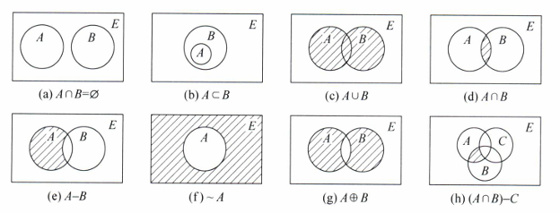
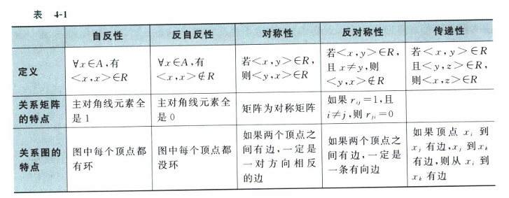

离散期末复习提纲¶
📖 阅读信息
阅读时间约 26 分钟 | 约 4651 字 | 约 32 个公式 | 没有代码，请放心食用
逻辑学部分¶
内容梳理¶
命题可以符号化。简单的陈述句不能被分解因此是简单命题或者原子命题，又称为命题常项或者命题常元。与之对应的是命题变项，也就是真值可以变化的陈述句。命题常项和命题变项统称为简单命题。
用联结词连接简单命题就构成了复合命题。常见的联结词包括：非、合取、析取、蕴含、等价。不含有命题常项的复合命题被叫做合式公式，简称公式。对公式的命题变项进行真假的赋值，就可以得到公式的真假，这个操作叫做赋值或者解释。对应有成真赋值和成假赋值。所有赋值可以拉一张表叫做真值表。恒真的公式叫做重言式，恒假的公式叫做矛盾式，除此之外的公式叫做可满足式。
真值表相同的公式叫做等值式。由此可以在等值式直接相互推演，被叫做等值演算。为了更方便进行等值演算，需要利用一些常见的等值式。一个常用的等值式是蕴涵等值式，即 \(A\rightarrow B \Leftrightarrow \lnot A \lor B\)。等值式不仅可以直接相互推演，也可以通过替换的形式进行推演。
范式包含析取范式和合取范式。我们可以通过蕴含等值式、等价等值式、德摩根律以及分配律等操作将一个公式拆分为几个简单合取式的析取——这对应的是主析取范式。我们可以简单地用真值表来拆分。主析取范式的每一项对应的是原公式的成真赋值，与之对应的，主合取范式的每一项对应的是原公式的成假赋值。因为这两个范式在功能上和真值表等价，因此也可以用来判别两个公式是否等值。
联结词的全功能集指的是使用这个集合里面的联结词能够表达所有的真值函数。非加上与、或、蕴含都是全功能集，单独的与非和或非也是全功能集。与非和或非的符号是在与和或的符号中间添加一个竖线。
主析取表达式可以进行化简，得到的结果叫做最简展开式，或者在数电里面叫做最简与或表达式。数电里面讲授的方法叫做卡诺图法，这里讲授的方法叫做奎因-莫可拉斯基方法。
奎因-莫可拉斯基方法简述如下：首先根据主析取范式的每个项对应的二进制写出来，然后采用一个类似Huffman数的构造方式，选取二进制仅有 1 位不同的两个数，将其合并并把那一位用 - 号代替，并记录合并的节点列表，然后被合并的两个数出队，新增的带减号的数入队，不断进行这个操作直到无法入队，再选择队里面的一个最小子集，使得子集里面的的节点列表形成的集合大小等于原理的极小项的个数。
推理分为前提和结论。判断推理是否正确的过程就是将“前提的合取蕴含结论”这个公式推演成重言式或者非重言式。
以上所述内容是命题逻辑的概述。一阶逻辑通过引入谓词，实现了对逻辑概念更精细的处理。
正如陈述句包含主语和谓语一样，个体+谓词就构成了一个原子公式。同样，个体和谓词也分为常项和变项。对于个体变项而言，其取值范围被称作个体域或者论域。如果没有特殊指定，则默认的个体域为全总个体域，在其中提到“偶数”、“人”等概念需要先用谓词约束。
为了更精细地表达概念，我们需要引入量词。量词包含存在量词和全称量词，这两个量词的符号化形式不同，一个是 \(\forall x(A(x)\rightarrow B(x))\) 另一个是 \(\exists x(A(x)\land B(x))\)，并且多个量词同时出现时，不能颠倒词序。
通过引入联结词，我们可以将简单命题（原子命题）组合成复杂命题，同样的，我们可以将原子公式组合成合式公式。其中原子公式就是刚刚提到的个体+谓词，然后按照各个联结词和量词的语法规则，就可以组合成合式公式。
下面介绍换名规则。\(\forall xA\) 和 \(\exists x A\) 里面的 \(A\) 被称作指导变项 \(x\) 的辖域，在这里面 \(x\) 是受约束的，而其他变项是自由的。但是考察类似下面的式子： \(\forall x A(x,y)\land \exists y B(x,y)\) 由于 \(x\) 的第一次出现是作为约束变量，但是第二次出现是作为自由变量，这说明两次出现的 \(x\) 并非同一，应当指派新的符号。这就是换名规则，指派合适符号使得每个命题变项的出现都是要么约束出现要么自由出现，一般是把指导变项的所有约束出现做替换。比如刚刚的例子就可以换成 \(\forall z A(z,y)\land \exists t B(x,t)\)。
在命题逻辑中我们利用真值表对复杂命题做出了讨论；在一阶逻辑中的对应物是解释。解释需要 4+1 个元素，1 对应的是论域，剩下 4 对应的是构成合式公式的 4 个元素：个体常项，个体变项，谓词和函数。
类似的，在命题逻辑里面区分了重言式，矛盾式和可满足式。在一阶逻辑里面，它们的名字分别叫做逻辑有效式，矛盾式和可满足式。
在命题逻辑里面我们紧接着讨论了等值式和范式。在一阶逻辑里也有等值式，比如量词否定等值式，量词辖域收缩/扩张等值式和量词分配等值式等，这些等值式都是符合直觉的。通过这些等值式，我们最终可以把合式公式推演为一种等价形式：\(Q_ix_i\cdots B\)。其中前面是不同个体及其量词，最后的 B 是一个不含量词的复合命题。这被叫做前束范式。推演前束范式时还需要利用换名规则。
一阶逻辑的推理理论主要依靠三段论。但是教程没讲。这里也不多说。
技巧操作¶
等我做题。
集合论部分¶
内容梳理¶
这一节内容没有技巧性，全是背诵内容。
集合最大的特征就是元素的互异性。关于空集、子集、真子集和全集等定义和性质，在高中已经讲过，在此不加赘述。
幂集是所有子集的集合，\(n\) 元集合 \(A\) 的幂集 \(P(A)\) 是 \(2^n\) 元的。需要注意有些集合没有对相同项进行归并，存在伪装。

上面展示了集合的运算。
对集合运算的证明可用集合本身的运算律，也可以转化成命题逻辑来证明。
排斥原理等也可以通过 Wenn 图说明，在此不赘述。
std::pair<T1, T2> 构成一个二元关系，std::tuple<T1, T2, ..., Tn> 构成一个有序 \(n\) 元组。如果 \(T1 \in A, T2\in B\) 那么构成的所有有序对组成一个新的集合 \(A\times B\) 叫做笛卡尔积。
有穷集合上面的二元关系可以用关系矩阵和关系图来表示。其实就是邻接矩阵和对应的图。
关系有其定义域和值域，含义和高中学到的一致。定义域和值域的合称是域。关系可以合成，在其他集合上做限制，也可以求得限制后的值域（叫做像），关系可以求逆，只需要把二元关系反序即可。
关系有 5 种性质，由下表所示：

在关系内添加新的有序对，使其满足上面所述的自反性、对称性和传递性，就构成了自反闭包，对称闭包和传递闭包。
如果有一种关系满足上面的三种性质，则这种关系叫做等价关系。透过等价关系，可以将互相等价的元素归到同一类里面，得到的就是等价类，所有等价类形成原来集合受该关系诱导的一个划分，集合起来就叫做商集合。等价关系和划分是一一对应的。
把等价关系需要满足的对称性改成反对称性，就构成了偏序关系。注意偏序关系包括自反性，所以单纯的小于不是偏序关系。典型的偏序关系是小于等于。
非空集合上定义好偏序关系，就变成了偏序集。对于有穷的偏序集，如果每两个元素之间都可以比较，那么就构成了一个全序集。全序集可以用哈斯图表示。偏序集可能存在最小/最大，极小/极大元。这里的最值和极值的定义和和高中一致，区别在是否是全域的。
函数是一种特殊的二元关系，关键在于定义域内的单一元素只能有1个像。满射、单射和双射的定义和高中一致。其他诸如常函数、恒等函数、单调函数、函数复合与反函数等概念，也和高中知识一致。
技巧操作¶
等我做题。
图论部分¶
内容梳理¶
无向图和有向图的定义和我们在数据结构课程所学一致。其矩阵就是对应的邻接矩阵。关于顶点，度数，环，重边等概念在数据结构课程中已经提及。需要提及的新内容如下：一条边可以关联两个顶点，那么边和顶点之间有0, 1, 2的关联次数。孤立点是没有边关联的顶点。度数为 1 的顶点叫做悬挂顶点，对应的边叫做悬挂边。用 \(d(v)\) 表示 \(v\) 的度数。用希腊字母 \(\delta\) 表示整个图的度数，大写表示最大度，小写表示最小度，正号角标表示出度，负号角标表示入度，这样可以组合出 6 套记号，虽然都没什么用。有 n 个顶点的图叫做 n 阶图。
一个重要的定理叫做握手定理，基于一条边有两个端点的事实，可以得出所有节点的度数之和为边数的两倍。类似的，所有顶点的入度和出度之和也是一样的且等于边数，这就是基尔霍夫电流定律。
全连接的图叫做完全图。从图中选择一部分顶点和边可以得到子图。如果子图和母图不一样，则叫做真子图。有两种特殊的子图：生成子图是指仅去掉一部分边的子图；导出子图则需要首先指定边集或者点集。对于边集而言，纳入该边集关联的所有顶点即可，记作 \(G[E]\)；对于点集而言，纳入两端点都在这个点集的所有边即可，记作 \(G[V]\)。补图是用同阶完全图的边集减去原来的边集得到的。
两个图的连接情况一样，叫做两个图同构。目前没有找到判断图同构的多项式时间算法。
通路和回路都是图内部的路径，其中回路要求起点和终点一样。如果没有重复边出现，则加入定语“简单”，否则用复杂修饰。在此基础上如果没有重复顶点出现，则把定语换成“初级”/“基本”。初级回路又叫做圈。
所有点之间都存在双向通路的图叫做（强）连通图。非连通图可以拆分成内部连通的子图，叫做连通分支。\(G\) 的连通分支个数记作 \(p(G)\)。对于有向图而言，如果在不考虑方向的情况下联通，就叫做弱连通图。如果所有点之间至少存在单向通路，就叫做单向连通图。
删掉某个点及其关联的所有边能够使得图的连通分支数增加的，叫做割点。如果删掉的不止 1 个点才能增加，那删掉的点构成的集合叫做点割集。对边也有相同的定义。特别的割边叫做桥。教材这个定义根本不是人话我草了。
带权图的最短路径可以通过 Dijkstra 算法简单求得。DAG 可以求取关键路径及其相关量。这些算法在数据结构课上已经讲解过了。任何图都可以被4种颜色着色。
没有长度为奇数的回路的图叫做二部图。二部图的一个特征是，可以把顶点分成两组，而所有的边的两个端点一定位于不同的组里面。这两组叫做互补顶点子集。两组顶点之间进行一个全连接的操作，就得到了完全二部图，记作 \(K_{n,m}\)。
二分图上的一个重要操作是匹配。匹配的意思就是一个边集，边集里面的边不共享顶点。因此有最大匹配的概念，也就是不能再往里面加边的匹配。最大匹配的边数记作 \(\beta_1(G)\)。在匹配里面出现过的顶点叫做饱和点，其他点叫做非饱和点。所以如果每个点都是匹配里面的顶点，说明找到了完美匹配，也就是天下有情人都成眷属了。类似的概念叫做完备匹配，指的是两组顶点里面，数目比较少的那一组顶点能都找到眷属，并且这个匹配还得是最大匹配。这个完备匹配的存在性可以通过 Hall 定理来等价表述：在较少的那一组顶点(V1)里面任取 k 个点，然后寻找它们邻接到的顶点数，如果都大于等于 k，则必然是完备匹配。这个定理还是比较直觉的，毕竟每产出一条匹配里面的边就会少一个选择机会，如果小于 k 的话，选择机会会提前用完，就会有单身汉咯。这个叫做相异性条件。从这个条件可以推导一个更严格的条件，如果V1里面顶点度数的下界和V2里面顶点度数的上界有交集，也可以推出存在完备匹配。
欧拉图是另外一种特殊的图，是可以一笔画成环的图。这里的一笔画是指存在路径能经过每条边且只经过每条边一次。判断的要点在于分类讨论：如果顶点度数都是偶数，那么存在欧拉回路，也就是欧拉图；如果有俩顶点度数是奇数，则存在欧拉通路；其他情况就不是欧拉图。
哈密顿图和欧拉图类似。但是需要把点换成边。类似的，存在哈密顿通路和哈密顿回路的概念。判定哈密顿图的必要条件是，删去一部分顶点后，所得的连通分支数要不大于删去的顶点数。这很好理解，考虑一条哈密顿回路，删去 n 个顶点之后，最多切出 n-1 个连通分量，如果切多了，自然不会存在哈密顿回路。而相关的充分条件是找任意一对不相邻的顶点的度数之和，如果大于等于 n - 1 则存在哈密顿通路，如果大于等于 n 则存在哈密顿回路。有向图的哈密顿通路的充分条件是，无向化之后如果包含生成子图 \(K_n\) 的有向图存在哈密顿通路。
教材还介绍了一种特殊的图，即平面图。平面图的意思是，存在一种画法使得图的边之间没有交叉。平面图的每个面周围有一圈边，这些边的数目就是这个面的次数，类似握手定理，所有面的次数之和为边数的两倍。类似的，我们可以把面当成顶点，面与面之间的分界边就是两个面关联的边，这样构造出来的图叫做对偶图，对偶图的顶点度数就等于对应的面的次数。平面图如果不能再加边了，就带一个定语“极大”；非平面图如果减去一条边就变成平面图，就带个定语“极小”。大于等于 3 阶的极大平面图有一个充分必要条件：连通且每个面的次数是 3 。这很好理解，如果有个面是次数大于 3 那完全可以进行三角剖分而不改变平面性。欧拉公式是 V-E+F = p+1，其中 V 是顶点数，E 是边数，F 是面数，p 是连通分支数。判定一个图是否是平面图需要用到同胚和库拉图斯基定理。同胚的意思是，将二度顶点删去或者添加后，图仍然同构。因此如果图是否是平面图和有没有和 \(K_{3,3}\) 或者 \(K_5\) 同胚的子图是等价的。通过对偶可以将面着色变为点着色。需要注意对偶并不保证同构性。
树有很多等价的定义，在此不赘述，数据结构都学过。如果一个图的生成子图是树，那么这个树就叫做图的生成树。在生成树里面的边叫做树枝，不在的叫做弦，所有弦的集合叫做余树，余树可以不是树。通过弦可以把生成树的一部分边连接成回路，这叫做基本回路。所有基本回路组成的集合叫做基本回路系统。对于一个树枝而言，可以挑选一些弦构成一个边割集，叫做基本割集。同理存在基本割集系统。
最小生成树有多种获取方法。比如Kruskal算法，也叫做避圈法，Prim 算法，以及破圈法：在图中选择任意一个圈并删去权值最大的边直到没有回路。
有根树是有根的树。最重要的是二叉树。关于此，教材只介绍了构造 Huffman 树的算法。
📝 如果您需要引用本文
Yan Li. (Jan. 10, 2026). 离散期末复习提纲 [Blog post]. Retrieved from https://dicaeopolis.github.io/campus-sources/Discrete_notes
在 BibTeX 格式中：